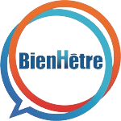

Choix de cette association
J'ai choisi de m'impliquer avec l'association BienHêtre en raison de son engagement profond envers l'inclusion et l'épanouissement des personnes en situation de handicap. Leurs valeurs fondamentales de partage, de bien-être, d'esprit d'équipe, d'échange et de rapport humain résonnent particulièrement avec mes propres convictions. J'apprécie la diversité des activités proposées, allant des sports adaptés aux ateliers de sensibilisation, qui créent des opportunités uniques de rapprochement entre les personnes valides et celles en situation de handicap. La possibilité de contribuer à des projets qui favorisent l'estime de soi et l'insertion professionnelle des personnes handicapées est pour moi une source de motivation et de satisfaction.
De plus, mon engagement avec BienHêtre est particulièrement personnel car j'ai déjà été investie dans cette association par le passé. Cette implication me touche profondément, car l'association appartient à mes voisins, les parents de mon amie, qui sont aveugles et malvoyants. Leur parcours et leur dévouement m'ont inspirée à m'engager activement pour soutenir leur mission et à contribuer à une cause qui me tient à cœur. BienHêtre incarne une vision d'une société plus inclusive et respectueuse des différences, et c'est cette vision que je souhaite soutenir et promouvoir à travers mon engagement.